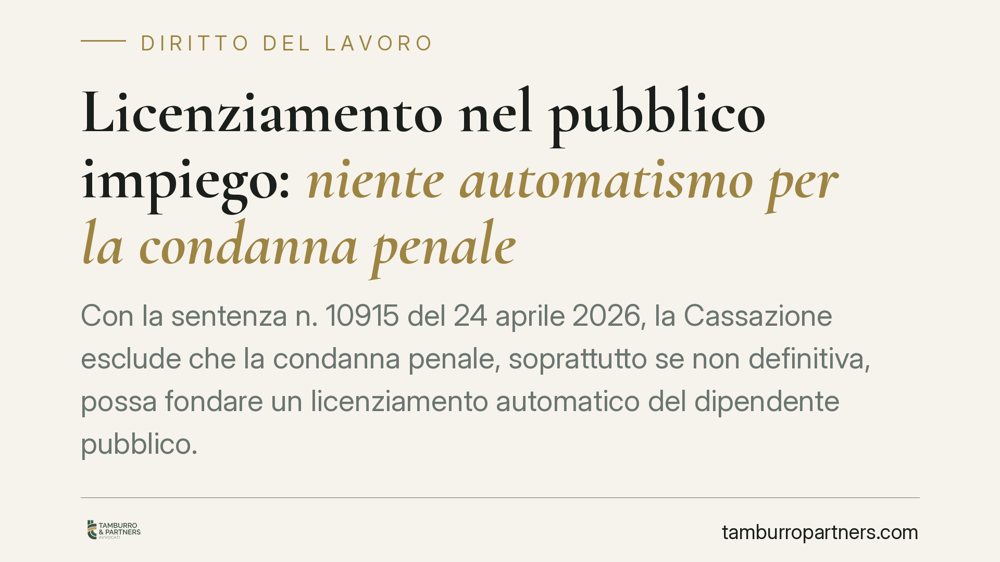

Licenziamento nel pubblico impiego: niente automatismo per la condanna penale
Con la sentenza n. 10915 del 24 aprile 2026, la Cassazione esclude che la condanna penale, soprattutto se non definitiva, possa fondare un licenziamento automatico del dipendente pubblico. L'amministrazione deve sempre valutare la proporzionalità tra fatto contestato e sanzione espulsiva. È una pronuncia che incide sui poteri disciplinari della PA e sulle garanzie dei lavoratori.

Il caso e la decisione
La Corte di Cassazione, Sezione Lavoro, con la sentenza n. 10915 del 24 aprile 2026, è tornata su un nodo ricorrente: la condanna penale di un dipendente pubblico può tradursi, da sola, nella perdita del posto di lavoro?
La risposta dei giudici è negativa. Non esiste un automatismo tra condanna penale e licenziamento. Due i passaggi centrali. Primo: il licenziamento richiede, di regola, un giudicato penale definitivo, cioè una sentenza non più impugnabile. Una condanna di primo grado, ancora soggetta ad appello, non basta a giustificare la risoluzione del rapporto. Secondo: anche di fronte a una condanna definitiva, l'amministrazione non può applicare la sanzione espulsiva in modo meccanico, ma deve sempre svolgere un giudizio di proporzionalità.
Inquadramento normativo
La materia disciplinare nel pubblico impiego è regolata dal d.lgs. 165/2001 (Testo Unico sul pubblico impiego) e, in particolare, dagli artt. 55 e seguenti, che disciplinano sanzioni e responsabilità. Le ipotesi di licenziamento disciplinare sono tipizzate dall'art. 55-quater, che individua condotte di particolare gravità.
Il principio di proporzionalità, richiamato dalla Cassazione, deriva dall'art. 2106 del Codice civile: la sanzione deve essere graduata in base alla gravità dell'infrazione. A questo si aggiunge la garanzia della presunzione di non colpevolezza fino alla condanna definitiva, sancita dall'art. 27, secondo comma, della Costituzione. La Corte ribadisce che far discendere la fine del rapporto da una condanna non definitiva confligge con questo impianto di garanzie.
In sintesi: la condotta penalmente rilevante può integrare un illecito disciplinare, ma il procedimento disciplinare resta autonomo dal processo penale e deve fondarsi su una valutazione propria, non su un travaso automatico del verdetto del giudice penale.
Implicazioni pratiche
Per le amministrazioni pubbliche cambia il margine di discrezionalità. Non è più sostenibile l'idea che la notizia di una condanna, specie se di primo grado, attivi un percorso obbligato verso il licenziamento. L'ufficio competente per i procedimenti disciplinari deve istruire una valutazione autonoma, motivata e proporzionata, pena l'illegittimità del provvedimento.
Per il dipendente pubblico la pronuncia rafforza le tutele. La pendenza di un giudizio penale, o una condanna ancora impugnabile, non determina di per sé la perdita del posto. Resta ferma, però, la possibilità di misure cautelari come la sospensione dal servizio, che hanno natura diversa e provvisoria rispetto al licenziamento.
Attenzione: la sentenza non significa impunità. Se i fatti sono gravi e accertati in via definitiva, e se la valutazione di proporzionalità conferma l'incompatibilità con la prosecuzione del rapporto, il licenziamento resta legittimo. Ciò che viene escluso è l'automatismo, non la sanzione in sé.
L'effetto pratico più rilevante riguarda i provvedimenti espulsivi già adottati sulla base di condanne non definitive: sono esposti a un rischio concreto di annullamento in sede giudiziale, con possibili conseguenze in termini di reintegrazione e risarcimento.
Cosa fare in concreto
- Verifica lo stato del giudizio penale: accerta se la condanna è definitiva o ancora impugnabile prima di valutare qualsiasi iniziativa disciplinare espulsiva.
- Motiva la proporzionalità: documenta per iscritto la valutazione tra gravità del fatto, ruolo del dipendente e sanzione applicata.
- Distingui sospensione e licenziamento: utilizza le misure cautelari provvisorie quando i presupporti del licenziamento definitivo non sono ancora maturi.
- Rivedi i provvedimenti adottati: se hai impugnato o subìto un licenziamento fondato su condanna non definitiva, valuta tempestivamente le azioni di tutela.
- Rispetta i termini: i procedimenti disciplinari e le impugnazioni hanno scadenze rigorose; consigliamo di farle verificare per tempo.
Conclusioni
La sentenza n. 10915/2026 conferma una linea di garanzia: nel pubblico impiego il licenziamento disciplinare è una decisione che richiede accertamento definitivo e ponderazione, non una conseguenza automatica del processo penale. Per amministrazioni e lavoratori, il messaggio è chiaro: ogni provvedimento va costruito su una valutazione concreta e motivata.
Disclaimer
Contributo informativo a cura di Tamburro & Partners - Avv. Giuseppe Tamburro. Non costituisce parere legale.
Ogni storia di lavoro ha i suoi tempi.
Se gestisci HR e vuoi un confronto su contenzioso, ispezioni o licenziamenti, scrivi allo studio. Ti rispondiamo entro un giorno lavorativo.